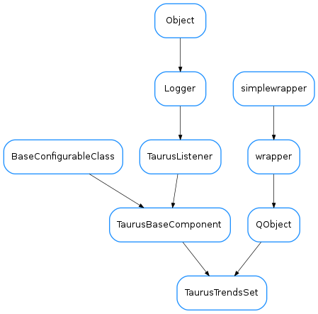

TaurusTrendsSet¶

-
class
TaurusTrendsSet(name, parent=None, curves=None)[source]¶ Bases:
PyQt4.QtCore.QObject,taurus.qt.qtgui.base.taurusbase.TaurusBaseComponentA collection of TaurusCurves generated from a Taurus Attribute.
If the attribute is a scalar, The Trend Set consists of only one curve representing the evolution of the value of the attribute. If the attribute is a SPECTRUM, as many curves as the length of the spectrum are created, each representing the evolution of the value of a component of the array.
When an event is received, all curves belonging to a TaurusTrendSet are updated.
TaurusTrendSet objects can be considered as containers of (sorted) curves. As such, the curves contained by them can be accessed with item notation, as in the following example:
attrname = 'a/b/c/d' #consider this attribute is a SPECTRUM of 3 elements ts=TaurusTrendSet(attrname) ... # wait for a Taurus Event arriving so that the curves are created ncurves = len(ts) #ncurves will be 3 (assuming the event already arrived) curve0 = ts[0] #you can access the curve by index curve1 = ts['a/b/c/d[1]'] #and also by name
Note that internally each curve is treated as a RawData curve (i.e., it is not aware of events by itself, but it relies on the TaurusTrendSet object to update its values)
-
addCurve(name, curve)[source]¶ add a curve (with the given name) to the internal curves dictionary of this TaurusTrendSet
Parameters: - name (
str) – the name of the curve - curve (
TaurusCurve) – the curve object to be added
- name (
-
clearTrends(replot=True)[source]¶ clears all stored data (buffers and copies of the curves data)
Parameters: replot ( bool) – do a replot after clearing
-
compileBaseTitle(basetitle)[source]¶ Return a base tile for a trend in whichs substitution of known placeholders has been performed.
Parameters: basetitle ( str) –- String on which the substitutions will be
- performed. The following placeholders are supported:
- <label> the attribute label (default)
- <model> the model name
- <attr_name> attribute name
- <attr_fullname> full attribute name (for backwards compatibility, <attr_full_name> is also accepted)
- <dev_alias> device alias
- <dev_name> device name
- <dev_fullname> full device name (for backwards compatibility, <dev_full_name> is also accepted)
- <current_title> The current title
- <[trend_index]> Same as: “[<trend_index>]” if Ntrends>1 else “”
Note that <trend_index> itself is not substituted!
Return type: strReturns: the compiled base title. See also
-
compileTitles(basetitle)[source]¶ Return a list of titles. Each title corresponds to a trend of the trendset (ordered). Substitution of known placeholders is performed.
Parameters: basetitle ( str) –- A string to be used as base title. It may
- contain any of the following placeholders (which will be substituted by their corresponding value):
- <label> the attribute label (default)
- <model> the model name
- <attr_name> attribute name
- <attr_fullname> full attribute name (for backwards compatibility, <attr_full_name> is also accepted)
- <dev_alias> device alias
- <dev_name> device name
- <dev_fullname> full device name (for backwards compatibility, <dev_full_name> is also accepted)
- <current_title> The current title
- <trend_index> The index of the trend in the trendset
- <[trend_index]> Same as: “[<trend_index>]” if Ntrends>1 else “”
Return type: string_listReturns: a list of title strings that correspond to the list of trends in the set. See also
-
consecutiveDroppedEventsWarning= 3¶
-
dataChanged¶
-
droppedEventsWarning= -1¶
-
forceReading(cache=False)[source]¶ Forces a read of the attribute and generates a fake event with it. By default it ignores the cache
Parameters: cache ( bool) – set to True to do cache’d reading (by default is False)
-
getCurveNames()[source]¶ returns a list of the names of the curves associated to this TaurusTrendSet. The curve names will always be returned in the order they were added to the set
Return type: list<str>Returns: the names of the curves
-
getCurves()[source]¶ returns an iterator of (curveName,curveObject) tuples associated to this TaurusTrendSet. The curves will always be returned in the order they were added to the set
Return type: iterator<str,TaurusCurve>Returns:
-
handleEvent(evt_src, evt_type, evt_value)[source]¶ processes Change (and Periodic) Taurus Events: updates the data of all curves in the set according to the value of the attribute.
For documentation about the parameters of this method, see
TaurusBaseComponent.handleEvent()
-
index(curveName)[source]¶ Returns the index in the trend for the given curve name. It gives an exception if the curve is not in the set.
Parameters: curveName ( str) – the curvename to findReturn type: intReturns: The index associated to the given curve in the TrendSet
-
setForcedReadingPeriod(msec)[source]¶ Forces periodic reading of the subscribed attribute in order to show get new points even if no events are received. It will create fake events as needed with the read value. Note that setting a period may yield unwanted results when the x axis is set to show event numbers (xIsTime==False)since there is no way of distinguishing the real from the fake events.
Parameters: msec ( int) – period in milliseconds. Use msec<0 to stop the forced periodic reading
-
setMaxDataBufferSize(maxSize)[source]¶ sets the maximum number of events that are stored in the internal buffers of the trend. Note that this sets the maximum amount of memory used by the data in this trend set to:
~(1+ntrends)*2*8*maxSize bytes(the data is stored as float64, and two copies of it are kept: one at the x and y buffers and another at the QwtPlotCurve.data)
Parameters: maxSize ( int) – the maximum limit
-
setTitleText(basetitle)[source]¶ Sets the title text of the trends this trendset. The name will be constructed by appending “[%i]” to the basetitle, where %i is the index position of the trend in the trendset. As a particular case, nothing is appended if the trendset consists of only one trend.
Parameters: basetitle ( str) – The title text to use as a base for constructing the title of each trend belonging to this trendset. It may contain placeholders as those used inTaurusCurve.setTitleText()See also
-